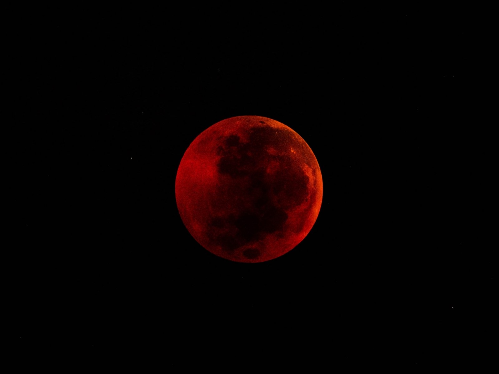

<!DOCTYPE html>
<html>
<head>
	<title> Lab 16 – Fancy CSS 2 </title>
	<link rel="stylesheet" type="text/css" href="css/index.css">
</head>
</html>
				<div id="content">
				<br>
			  <h1> ✧･ﾟ✧･ﾟ:✧ LAB 16: Fancy CSS 2 ✧･ﾟ✧･ﾟ✧ </h1>
				<br>
				<div id="image"> </div>
				<br>
				<br>
				<br>
				<div id="purpose">
				<h1> Purpose of this lab:</h1>
				<p> The purpose of this lab is to build on to our last lab by working with our partner, <br>
					just like the last lab, experiment with the fancy CSS we learned in lecture.
</p>
				<br>
				</div>
				<br>
				<div id="challenges">
				<h1> Challenges doing this lab: </h1>
				<p> Challenges doing this lab included recognizing and knowing the css code for each element. Once it became familiar, I got the hang of it.<br>
				</p> <br>
				</div>
				<br>
				<div id="results">
				<h1>My results:</h1>
				<p> I was succesful on managing my way around this lab and the results are shown in the screenshots <br>
					on our pdf!	This lab showed me how much control I can have over CSS and the little elements on the site.  </p>
				</div>

				<br>
				<br>
				<br>

			<div id="columns">
			<h1> Quotes that I live by... </h1>
				<p> "She who dares, wins" <br>
				"She is clothed with strength and dignity; <br>
    		she can laugh at the days to come."
				"Fake it, til you make it." </p>
				<br>
<br>
<div id="animation">
<a href="../homepage.html"> - Let's go home, click me - </a>
<br>
<a href="css/lab.css"> - Click to see my CSS code – </a>
<br>
<br>
<br>
<br>
</div>
